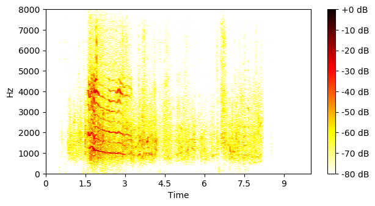
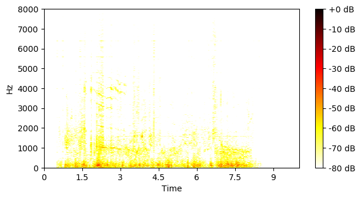
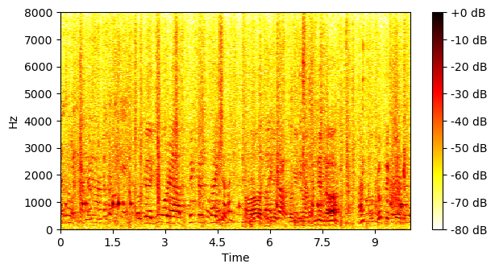
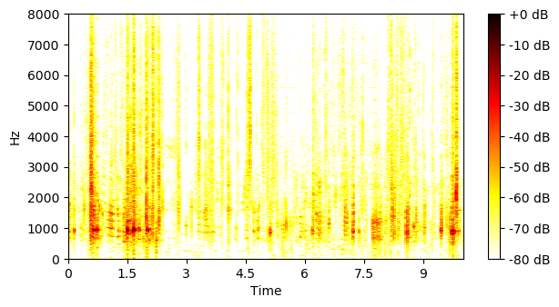
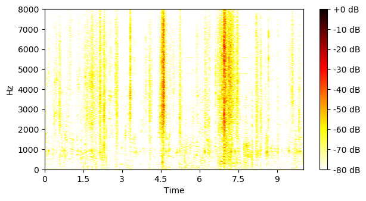
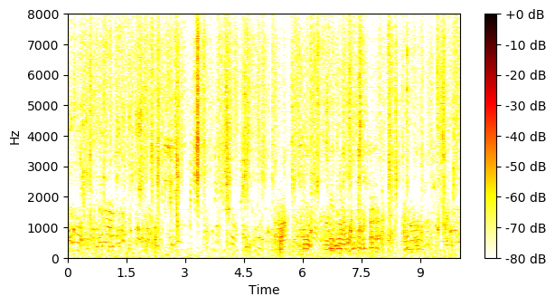
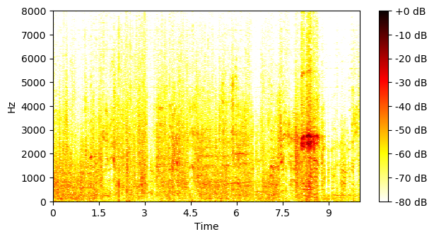

Reverberant FUSS test set
| Mixture |
|
|||||||
|---|---|---|---|---|---|---|---|---|
| Ground-truth sources |

SI-SNR = 85.14 dB |

SI-SNR = -85.14 dB |

SI-SNR = -85.14 dB |

SI-SNR = -85.14 dB |

SI-SNR = -85.14 dB |

SI-SNR = -85.14 dB |

SI-SNR = -85.14 dB |

SI-SNR = -85.14 dB |
| Method | Separated source 0 | Separated source 1 | Separated source 2 | Separated source 3 | Separated source 4 | Separated source 5 | Separated source 6 | Separated source 7 |
| Sup FUSS unsup Freesound p_0=0.2 |

SI-SNR = 8.70 dB |

SI-SNR = -47.00 dB |

SI-SNR = -56.56 dB |

SI-SNR = -57.11 dB |

SI-SNR = -58.08 dB |

SI-SNR = -64.39 dB |

SI-SNR = -65.49 dB |

SI-SNR = -77.15 dB |
| Sup FUSS p_0=0.2 |
SI-SNR = 42.26 dB |

SI-SNR = -25.93 dB |

SI-SNR = -25.98 dB |

SI-SNR = -26.01 dB |

SI-SNR = -26.04 dB |

SI-SNR = -26.05 dB |

SI-SNR = -27.01 dB |

SI-SNR = -32.00 dB |
| Unsup FUSS |

SI-SNR = 2.77 dB |

SI-SNR = -53.65 dB |

SI-SNR = -60.57 dB |

SI-SNR = -60.87 dB |

SI-SNR = -65.09 dB |

SI-SNR = -68.72 dB |

SI-SNR = -69.06 dB |

SI-SNR = -76.60 dB |
| Unsup Freesound |

SI-SNR = 1.18 dB |

SI-SNR = -67.07 dB |

SI-SNR = -67.73 dB |

SI-SNR = -69.21 dB |

SI-SNR = -70.02 dB |

SI-SNR = -71.21 dB |

SI-SNR = -71.59 dB |

SI-SNR = -76.51 dB |
| Mixture |

|
|||||||
|---|---|---|---|---|---|---|---|---|
| Ground-truth sources |

SI-SNR = 3.44 dB |

SI-SNR = -3.41 dB |

SI-SNR = -85.16 dB |

SI-SNR = -85.16 dB |

SI-SNR = -85.16 dB |

SI-SNR = -85.16 dB |

SI-SNR = -85.16 dB |

SI-SNR = -85.16 dB |
| Method | Separated source 0 | Separated source 1 | Separated source 2 | Separated source 3 | Separated source 4 | Separated source 5 | Separated source 6 | Separated source 7 |
| Sup FUSS unsup Freesound p_0=0.2 |

SI-SNR = 11.05 dB |

SI-SNR = 7.26 dB |

SI-SNR = -39.03 dB |

SI-SNR = -39.07 dB |

SI-SNR = -39.11 dB |

SI-SNR = -39.12 dB |

SI-SNR = -39.13 dB |

SI-SNR = -40.28 dB |
| Sup FUSS p_0=0.2 |
SI-SNR = 10.93 dB |

SI-SNR = 7.10 dB |
SI-SNR = -34.15 dB |

SI-SNR = -34.17 dB |

SI-SNR = -34.19 dB |

SI-SNR = -34.19 dB |

SI-SNR = -34.21 dB |

SI-SNR = -34.26 dB |
| Unsup FUSS |

SI-SNR = 6.21 dB |

SI-SNR = 7.58 dB |

SI-SNR = -50.88 dB |

SI-SNR = -56.44 dB |

SI-SNR = -57.89 dB |

SI-SNR = -62.34 dB |

SI-SNR = -64.28 dB |

SI-SNR = -74.74 dB |
| Unsup Freesound |

SI-SNR = 5.78 dB |

SI-SNR = 8.73 dB |

SI-SNR = -56.69 dB |

SI-SNR = -58.52 dB |

SI-SNR = -60.37 dB |

SI-SNR = -67.96 dB |

SI-SNR = -69.94 dB |

SI-SNR = -74.02 dB |
| Mixture |

|
|||||||
|---|---|---|---|---|---|---|---|---|
| Ground-truth sources |

SI-SNR = 22.46 dB |

SI-SNR = -22.30 dB |

SI-SNR = -82.77 dB |

SI-SNR = -82.77 dB |

SI-SNR = -82.77 dB |

SI-SNR = -82.77 dB |

SI-SNR = -82.77 dB |

SI-SNR = -82.77 dB |
| Method | Separated source 0 | Separated source 1 | Separated source 2 | Separated source 3 | Separated source 4 | Separated source 5 | Separated source 6 | Separated source 7 |
| Sup FUSS unsup Freesound p_0=0.2 |

SI-SNR = 15.98 dB |

SI-SNR = 3.30 dB |

SI-SNR = -45.08 dB |

SI-SNR = -45.55 dB |

SI-SNR = -46.68 dB |

SI-SNR = -48.15 dB |

SI-SNR = -48.37 dB |

SI-SNR = -60.47 dB |
| Sup FUSS p_0=0.2 |

SI-SNR = 25.00 dB |

SI-SNR = 3.08 dB |
SI-SNR = -25.92 dB |

SI-SNR = -25.92 dB |

SI-SNR = -25.94 dB |

SI-SNR = -26.03 dB |

SI-SNR = -26.27 dB |

SI-SNR = -29.90 dB |
| Unsup FUSS |

SI-SNR = 0.09 dB |

SI-SNR = 6.20 dB |

SI-SNR = -47.64 dB |

SI-SNR = -51.88 dB |

SI-SNR = -63.51 dB |

SI-SNR = -69.08 dB |

SI-SNR = -73.70 dB |

SI-SNR = -76.75 dB |
| Unsup Freesound |

SI-SNR = 4.74 dB |

SI-SNR = 1.49 dB |

SI-SNR = -49.17 dB |

SI-SNR = -54.73 dB |

SI-SNR = -65.41 dB |

SI-SNR = -68.43 dB |

SI-SNR = -68.55 dB |

SI-SNR = -73.78 dB |